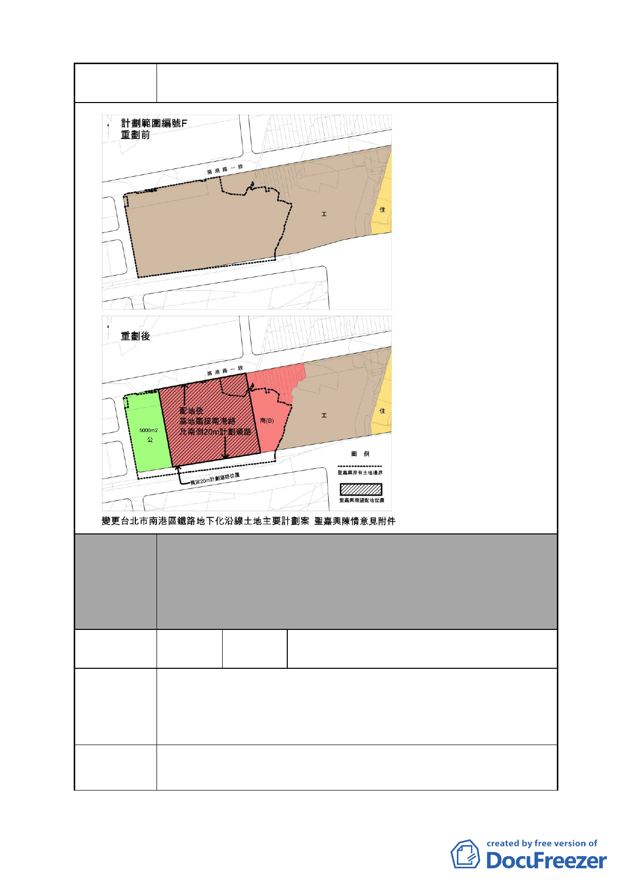

案 名 變更臺北市南港區鐵路地下化沿線土地主要計畫案
本案除文字誤繕應再作修正外，其餘依市府本次會議所送修
委員會
決議
正計畫書內容通過。
（市府本次會議所送修正計畫書，業於 F 區西側增劃 0.5 公頃
之公園綠地，俾利南港車站人潮集散。南側增設道路用地，
確保鐵路地下化後新生道路寬度達 20 公尺）
編號
3
陳情人
黃魏月秋、黃奇珍、黃承寶、黃明珠、黃
美瑛、黃靜江、黃育和、黃春芬
南港區南港段 4 小段 406、406-2 地號土地，緊鄰 D 計畫基地，
陳情理由 1
現供人行紅磚道及植樹使用，長期無償供公眾通行，綠化環
境貢獻良多，值此變更計畫之際，併入 D 案整體開發，實乃
良政。
請將該土地併入「台北南港高鐵站沿線新生地暨週邊土地整
建議辦法 1 體再開發計畫案」辦理整體開發。
- 21 -